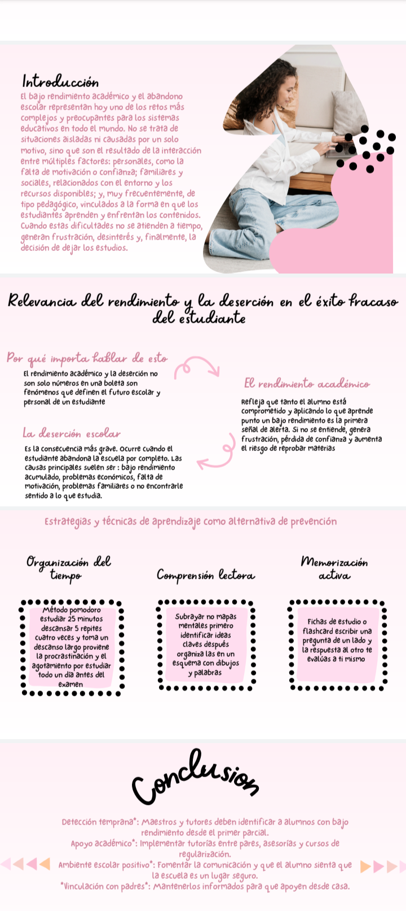
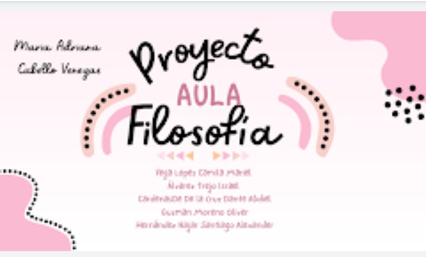

Filosofia II
Maria Adriana Cabello Venegas
en el proyecto de filosofia realizamos una presentación en power point n donde la temática era el rendimiento y la deserción, así como las estrategias de aprendizaje como una propuesta de apoyo para su prevención. Después, de forma lógica, dimos a conocer la relevancia de los fenómenos abordados en el éxito o fracaso del estudiante y dar a conocer estrategias y técnicas de aprendizaje como una alternativa de prevención, las posibles soluciones y el papel que asumen como estudiantes.

